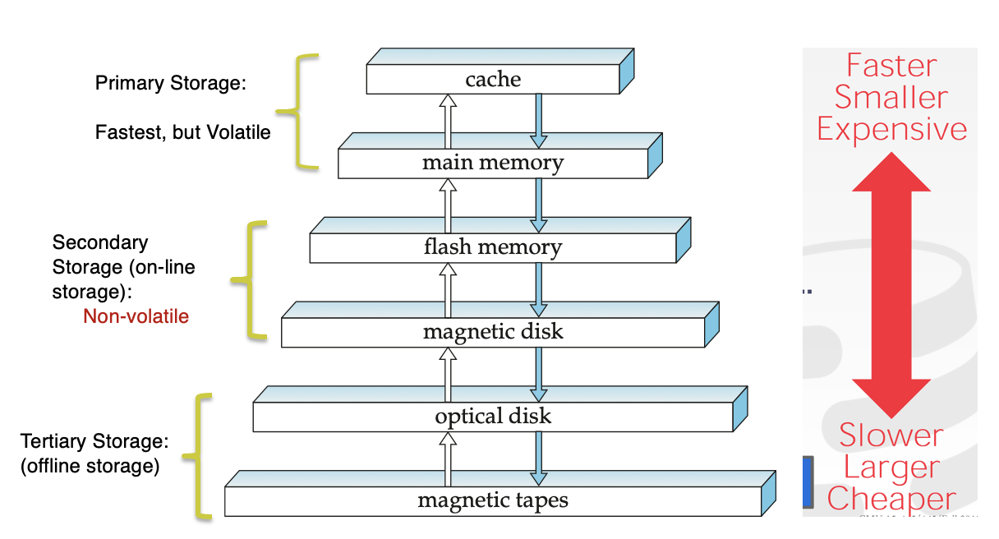

12 Storage
12.1 Overview of Physical Storage Media
- Storage mediums are classified by:
- speed at which data is accessed
- cost per unit of data
- reliability
\[\\[.1cm]\] b. Available Mediums: - cache - main memory - flash memory - magnetic disk storage - optical storage - tape storage
\[\\[.1cm]\]
Cache - fastest & most costly; relatively small & managed by computer systems hardware
Main Memory - storage medium for data that is readily availabe to be operated on
- generally too small (too expensive) for entire large databases
- can be lost when system crashes or in event of power failure
\[\\[.1cm]\]
- Flash memory - lower cost per byte than main memory but higher cost per byte than magnetic disks;
- widely used in cameras, cellphones, & USB flash drives
- non-volatile medium
- popular substitute for magnetic disks in PCs
SOLIF STATE DRIVE (SSD)uses flash memory but its interface is also block-oriented like magnetic disk- block-oriented interface - allows data to be stored & retrieve in units of a block
\[\\[.1cm]\]
- Magnetic disk storage - primary medium for long term online storage of data
- aka hard disk drive (HDD)
- non-volatile but disks may fail & destroy data though rarely happens
- to access data, systems moves data from disk to main memory & modified data must be written back to disk
\[\\[.1cm]\]
optial storage - disks like DVDs where data is written & read back using a laser light source
tape storage - used primary for back ups & archival data
- cheaper than disks & can store data for many years
- data must be read from beginning of tape, thus is called a sequential access storage
\[\\[.1cm]\]
SEQUENTIAL ACCESS- read data from beginning
DIRECT-ACCESS- read data from any location on mediumPRIMARY STORAGE- fastest storage media but also most expensive- cache
- main memory
\[\\[.1cm]\]
SECONDARY/ONLINE STORAGE- flash memory & magnetic disksOFFLINE/TERTIARY STORAGE- magnetic tapes & disk jukeboxes

Storage Hierarchy\[\\[.1cm]\]
12.2 Storage Interfaces
disk interface standard types:
- SATA (serial ATA) - supports data transfers speeds of up to 6 gigabits/sec
- SAS (serial attached SCSI) - supports 12 gigabits/sec
- NVMe (non-volatile memory express interface) - works w/PCIe connectors to support lower latency & higher transfer rates
- support data transfer rate of up to 24 gigabits/sec
Disks usually connect directly to computer
STORAGE AREA NETWORKS- a large # of disks are connected by a high speed network to a number serversNETWORK ATTACHED STORAGE (NAS)- instead of networked storage appearing to be a large disk, it provides a file system interface using networked file system protocols such as NFS or CIFsCLOUD STORAGE- data is stored in the cloud and accessed via an API
12.3 Magnetic Disks
- Surface of platter divided into circular tracks
- over 50K-100K tracks per platter on typical hard disks
- Each track is divided into sectors
- A sector is the smallest unit of data that can be read or written
- typically sector size is 512 bytes
- Typical sectors per track: 500 to 1000 (on inner tracks) to 1000 to 2000 (on outer tracks)
- To read/write a sector
- disk arm swings to position head on right track
- platter spins continually; data is read/written as sector passes under head
\[\\[.1cm]\]
- Head-disk assemblies
- multiple disk platters on a single spindle (1 to 5 usually)
- one head per platter, mounted on a common arm
\[\\[.1cm]\]
Cylinder i consists of ith track of all the platters
Disk controller – interfaces between the computer system and the disk drive hardware
- accepts high-level commands to read or write a sector
- initiates actions such as moving the disk arm to the right track and actually reading or writing the data
- Computes and attaches checksums to each sector to verify that
data is read back correctly
- If data is corrupted, with very high probability stored checksum won’t match recomputed checksum
- Ensures successful writing by reading back sector after writing it
- Performs remapping of bad sectors
12.4 Performance measurement of disks
ACCESS TIME– the time it takes from when a read or write request is issued to when data transfer begins. Consists of:- Seek time – time it takes to reposition the arm over the correct track
- Average seek time is 1/2 the worst case seek time.
- Would be 1/3 if all tracks had the same number of sectors, and we ignore the time to start and stop arm movement
- 4 to 10 milliseconds on typical disks
- Rotational latency – time it takes for the sector to be accessed to appear under the head
- 4 to 11 milliseconds on typical disks (5400 to 15000 r.p.m.)
- Average latency is 1/2 of the above latency.
- Overall latency is 5 to 20 msec depending on disk model
\[\\[.1cm]\]
DATA TRANSFER RATE– the rate at which data can be retrieved from or stored to the disk.- 25 to 200 MB per second max rate, lower for inner tracks
\[\\[.1cm]\]
- Disk block is a logical unit for storage allocation and retrieval
- 4 to 16 kilobytes typically
- Smaller blocks: more transfers from disk
- Larger blocks: more space wasted due to partially filled blocks
\[\\[.1cm]\]
I/O OPERATIONS PER SECOND (IOPS)- Number of random block reads that a disk can support per second- 50 to 200 IOPS on current generation magnetic disks
\[\\[.1cm]\]
MEAN TIME TO FAILURE (MTTF)– the average time the disk is expected to run continuously without any failureTypically 3 to 5 years
Probability of failure of new disks is quite low, corresponding to a “theoretical MTTF” of 500,000 to 1,200,000 hours for a new disk
Ex. an MTTF of 1,200,000 hours for a new disk means that given 1000 relatively new disks, on an average one will fail every 1200 hoursMTTF decreases as disk ages
12.5 Flash Storage
two main types: NOR flash vs NAND flash
NAND flash
- used widely for storage, cheaper than NOR flash
- requires page-at-a-time read (page: 512 bytes to 4 KB) - 20 to 100 microseconds for a page read - Not much difference between sequential and random read
- Page can only be written once and must be erased to allow rewrite
\[\\[.1cm]\]
- Solid state disks
- Use standard block-oriented disk interfaces, but store data on multiple flash storage devices internally
- Transfer rate of up to 500 MB/sec using SATA, and up to 3 GB/sec using NVMe PCIe
\[\\[.1cm]\] d. Erase happens in units of erase block - Takes 2 to 5millisecs - Erase block typically 256 KB to 1 MB (128 to 256 pages)
\[\\[.1cm]\]
Remapping of logical page addresses to physical page addresses avoids waiting for erase
Flash translation table tracks mapping also stored in a label field of flash page
- remapping carried out by flash translation layer
\[\\[.1cm]\]
- After 100,000 to 1,000,000 erases, erase block becomes unreliable and cannot be used
12.6 Optimization of Disk-block Access
A database file is partitioned into fixed-length storage units called blocks. Blocks are units of both storage allocation and data transfer.
Database system seeks to minimize the number of block transfers between the disk and memory
- this can be done by keeping as many blocks as possible in main memory
\[\\[.1cm]\]
BUFFER– portion of main memory available to store copies of disk blocks.BUFFERING- temporarily storing data read from blocks in an in-memory buffer, to satisfy future requests- done by both the operating system and the database system
\[\\[.1cm]\]
READ-AHEAD- Read extra blocks from a track in anticipation that they will be requested soonDisk-arm-scheduling algorithmsre-order block requests so that disk arm movement is minimizedFILE ORGANIZATION- organize blocks in a way that corresponds closely to the way we expect data to be accessedEx. If we expect a file to be accessed sequentially, then we should ideally keep all the blocks of the file sequentially on adjacent cylinders.- disks hide the exact block location from the operating system but use a logical numbers blocks in consecutive order